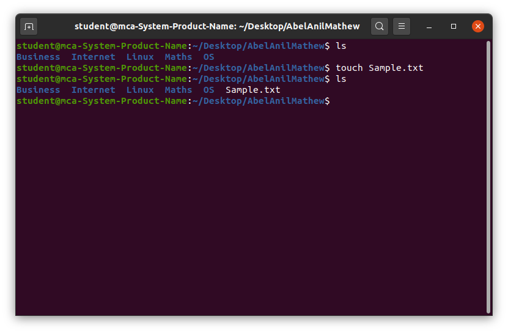

The touch command is a standard command used in the UNIX/Linux operating system which is used to create, change and modify the timestamps of a file. Basically, there are two different commands to create a file in the Linux system which are as follows:
touch command: It is used to create a file without any content. The file created using the touch command is empty. This command can be used when the user doesn’t have data to store at the time of file creation.
Using touch Command Initially, we are in the home directory and this can be checked using the pwd command. Checking the existing files using the command ls and then long listing command(ll) is used to gather more details about existing files.
The touch command in Linux is primarily used to create new, empty files and to modify the timestamps of existing files. By default, it updates the access and modification times of a file to the current time. If the specified file does not exist, touch creates an empty file with that name. This command is useful for quickly creating files without opening them or for updating file timestamps for tasks such as backups or system maintenance.
touch [options] file_nameThe most basic use of ‘cat’ is to display the contents of a file on the terminal. This can be achieved by simply providing the filename as an argument:
touch [options] file_nameThe file which is created can be viewed by ls command and to get more details about the file you can use long listing command ll or ls -l command. Here a file with name ‘File1‘ is created using the touch command.
This command is used to change access time only. To change or update the last access or modification times of a file, touch -a command is used.
touch -a fileNameThis command is used to check whether a file is created or not. If not created, it avoids creating it. This command prevents the creation of files.
touch -c fileNameThe touch command in Linux is a simple yet powerful tool for creating new empty files and updating file timestamps. Its versatility allows users to quickly generate files without opening editors, making it ideal for scripting and file management tasks. Whether you're managing timestamps for backups or creating placeholder files, the touch command plays a crucial role in day-to-day Linux operations. Its efficiency and ease of use make it an essential command for both beginners and advanced users.
"Don’t let what you cannot do interfere with what you can do."